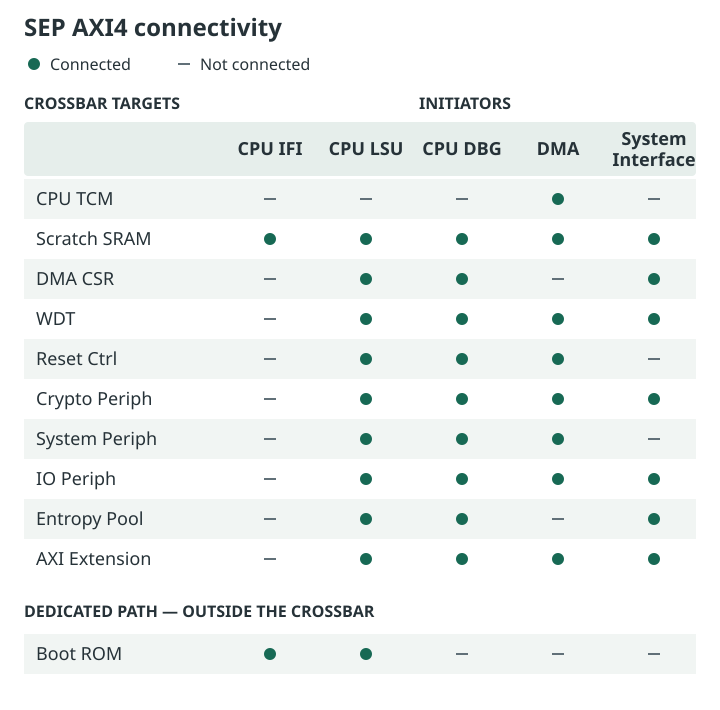
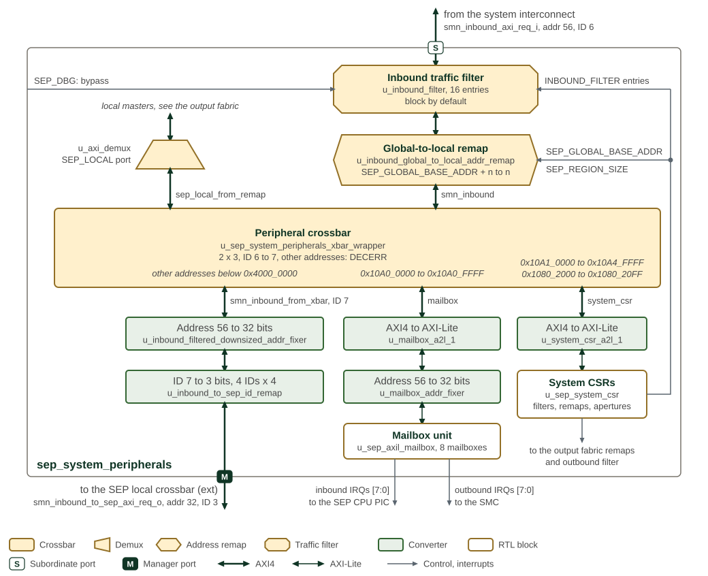
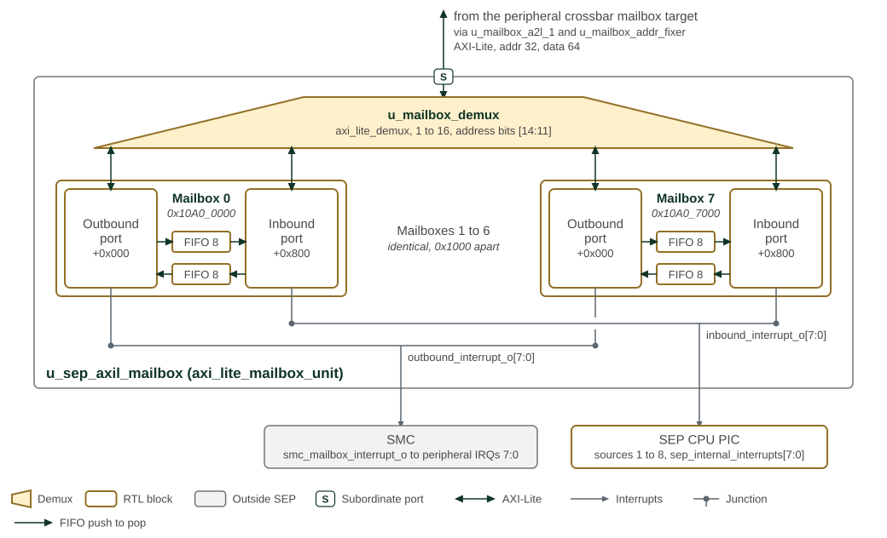

SEP Interconnect
The interconnect of SEP components and subsystems is done with a hierarchical AXI4 crossbar fabric. Masters drive traffic onto the interconnect fabric and receive responses from the addressed slave. Slave components are directly connected to the AXI4 fabric or via a bridging shim. The shim translates either AXI4-lite or the legacy Tilelink TL-UL used in OpenTitan. The goal is to eventually convert all TL-UL slaves into AXI4-lite slaves.
AXI4-lite slave bridges will need to perform the following tasks in order to mate with AXI4:
-
Bursts are not supported: convert burst transactions to single transactions
-
Write strobe (WSTRB) for partial write is not supported: TBD how to handle
-
Transaction IDs (AxID) handling
1. Top Level AXI4
Figure 1 shows the crossbar connectivity implemented in
hw/sys/sep/rtl/crossbars/sep_local_axi_xbar.sv, along with the dedicated
Boot ROM path that lies outside the crossbar. The crossbar has five
initiators (CPU IFI, CPU LSU, CPU DBG, DMA, and the System Interface)
and ten targets.
A few access paths are intentionally outside this crossbar:
-
Boot ROM is accessed by the CPU IFI and LSU through a dedicated point-to-point path, not through this crossbar.
-
The CPU’s own ICCM/DCCM are tightly coupled to the core and are not reached through this crossbar by the IFI/LSU. The CPU TCM target below is a backdoor AXI path into the ICCM/DCCM, used by the DMA engine to preload code/data.
-
The Alarm AGP is a feature deferred to the next generation and is not present.
The System Periph target aggregates the System Bus interface, the dual scratch register bank, the AP/STEE remap regions, and the outbound routing to SMC/SMN resources.
The Entropy Pool target is sep_entropy_fifo (0x1095_0000): a 64-bit
read-only entropy drain aperture, filled autonomously by a native EDN
endpoint on a separate hardware path (not this crossbar). Writes to it
terminate with BRESP=SLVERR.
The System Interface initiator is the external inbound master. It does
not attach to this crossbar directly; it enters SEP through the dedicated
smn_inbound port and the inbound traffic filter (block-by-default), then
through the sep_system_peripherals inner crossbar. That inner crossbar
reaches the mailboxes and system CSRs directly, and loops everything
else back into this crossbar’s System Interface initiator. The inbound filter
controls which addresses the external master may reach; it is block-by-default
after POR and configured by SEP firmware.

Figures and tables: Figure 1.
2. Fabric Topology
The input fabric admits external traffic through the inbound filter and system-peripheral decode. The local fabric connects SEP initiators to local resources, while the output fabric selects remapped or direct outbound paths.
The input paths are shown in Figure 2, the local resource connections in Figure 3, and the outbound paths in Figure 4. The three figures share one notation. Crossbars are rectangles, muxes and demuxes are trapezoids with the wide side towards the many ports, address remaps are hexagons and traffic filters are octagons. Green boxes are converters: address-width, data-width, ID-width and protocol conversion, and register cuts. Thick lines are AXI4 and thin lines AXI-Lite or TL-UL; every AXI data path is 64 bits wide unless a converter narrows it. The labels give the address and ID widths where they change, and the port badges mark where a path crosses the module boundary.

Figure 2 follows a request from the system interconnect through
sep_system_peripherals. The inbound filter checks it first; while SEP-scope
debug is enabled, SEP_DBG bypasses the filter. The global-to-local remap then
rebases the SEP_REGION_SIZE window at SEP_GLOBAL_BASE_ADDR to address 0 and
passes every other address unchanged. The peripheral crossbar has a second
initiator, the SEP_LOCAL port of the output fabric’s route demux, so local
masters reach the mailboxes and system CSRs through the same decode. Addresses
outside the mailbox and system CSR windows but below 0x4000_0000 are truncated
to 32 bits, their IDs reduced from 7 to 3 bits, and forwarded to the ext
initiator of the local crossbar. The crossbar answers any other address with
DECERR. The system CSRs program the inbound filter entries and the SEP aperture,
as well as the output fabric’s remaps and outbound filter.

Figure 3 shows the local crossbar with its initiators on the
left and its targets on the right, in crossbar port order. Each CPU master and
the secure DMA master pass a local alias remap before the crossbar; the remap
rewrites the 768 MiB window at SEP_LOCAL_BASE_ADDR to 0x1000_0000. The IFU
and LSU demuxes inside sep_cpu send boot ROM addresses to the boot ROM mux,
which reaches the ROM macro without passing the crossbar, and the IFU demux
answers addresses outside the boot ROM and SEP SRAM with DECERR. The chain on
each target row is the conversion the target needs: the secure DMA registers
and the watchdog are reached as 32-bit TL-UL, and the IO block, reset
controller and entropy pool as AXI-Lite. The sep_external demux diverts the
eFuse shim CSR window to the eFuse wrapper; every other address in the
0x2000_0000 to 0x3FFF_FFFF aperture leaves SEP on the AXI extension port.
Figure 1 gives the initiator-to-target connections.

Figure 4 follows local-master traffic that the local
crossbar sends to sep_system_peripherals. The address is zero-extended from
32 to 56 bits, passes the 16-region alias remap and a register cut, and reaches
the route demux. The demux takes the first match in the order shown: the SMC
aperture, supplied by the SMC, goes straight to the SMC without filtering; the
SMU aperture from SMU_GLOBAL_BASE_ADDR and SMU_REGION_SIZE, and any address
at or above 0x1_0000_0000, goes to the outbound mux; the AP and STEE regions
pass their output remaps, which replace the address with the programmed region
offset and set the source ID to OTHERS, before the same mux; and every other
address returns to the peripheral crossbar of the input fabric. The outbound mux
widens the ID from 6 to 8 bits, and the outbound filter, which has no bypass,
guards the path to the system interconnect.
3. Subsystem External Interfaces
-
Memory interfaces: BL0 ROM, DCCM, ICCM, Scratch SRAM, KM SRAM, KM ROM, OTBN IMEM, OTBN DMEM
-
Fuse controller interface
-
Entropy source interface
-
JTAG interfaces
-
RAS Interface - Alarm Processor is deferred to next generation
4. Local and External AXI4 Traffic Remapping

Figure 5 illustrates the AXI4 traffic management performed by the system peripherals block. Its left edge faces the SEP local crossbar and its right edge the SMU; the upper lane is the outbound path and the lower lane the inbound path, drawn in the notation of Section 2. The figure is an overview: Figure 4 and Figure 2 give every element with its instance name and address window. The AXI4 subordinate port on the left is driven by the local masters that the local crossbar connects to it: the CPU LSU, the CPU debug master and the secure DMA. Traffic may be local to the SEP or outbound to external resources either within the SMU or beyond the SMU. Traffic beyond the SMU to the rest of the chiplet or remote chiplets will bridge to the system NOC also known as the SMN.
Figures and tables: Figure 5.
4.1. Transaction Routing
Local resources can be addressed by SEP CPU direct internal addresses
or by the SEP CPU local-alias view. Local resources include CSRs in SEP
components and subsystems, SRAM, and the AP- and STEE-controlled
remappers. The local-alias view is an internal CPU-side naming
convention: for example, addresses in the high alias range can be
translated back to the direct internal 0x1000_0000 and 0x2000_0000
regions. This high local-alias window has a fixed SEP-local size of
768 MiB.
External masters use chiplet-global addresses. The SEP_GLOBAL_BASE_ADDR
and SEP_REGION_SIZE CSRs define the global SEP aperture used by the
SMU crossbar and by SEP inbound global-to-local remap. The current SEP_REGION_SIZE reset is 0x0100_0000 (16 MiB); firmware may
program a larger or different aperture during early boot to match the
chiplet address assignment.
Neighboring SMC resources are accessed through the SMC global aperture programmed by SMC firmware and supplied to SEP/SMU integration logic. That aperture is independent from the SEP CPU local-alias range.
As stated earlier, any transaction which is not routed to local SEP resources or to neighboring SMC resources is directly routed out to the SMN system NoC.
SEP’s outbound traffic serves to:
-
Provide security services and
-
Extend its protection to the rest of the system
Outbound security service traffic traverses the AP controlled remappers. When protecting the rest of the system, SEP traffic goes directly to the SMN system fabric. The SEP differentiates between these two cases and enforces that the correct path is used.
When SEP accesses shared resources such as shared memory for example, the traffic goes through the AP or STEE controlled remappers to get the address translation service. These remappers are controlled by external resources such as Ascalon AP. The inbound traffic filter ensures that only STEE has access to the STEE address remapper.
When SEP accesses external private memory or the system’s memory mapped IO, the SEP traffic is directly routed to SMN.
SEP’s outbound traffic carries a source ID in AxUSER. Traffic that
traverses the AP or STEE controlled remapper has its source ID replaced
with the regular source ID termed others''. Other traffic keeps the
source ID of its initiator: the CPU masters drive SEP’s unique source ID,
while the secure DMA master path leaves AxUSER at zero, which is the
others'' encoding. The fabric passes AxPROT, and with it the NS bit,
unchanged. Traffic then traverses the outbound filter after traversing the
remapper. SEP works with M-mode software to program the outbound filters
so that traffic with source ID ``others'' cannot access M-mode assets.
The outbound filter enables filtering based on address, NS and source
ID.
The SEP’s inbound traffic filter is configured by default to block all traffic from entering the SEP. The filter entries sit in the system CSRs, which the local masters reach directly and external masters only through an inbound filter entry that SEP firmware enables. Again, these filters enable filtering based on address, NS and source ID.
4.2. Traffic Filter Decode
Both SEP filters are instances of the common axi_filter_wrap block. The
inbound filter has 16 entries and the outbound filter has 32; each entry
is one filter_ctrl register triple (FILTER_CONFIG, START_ADDR,
END_ADDR). Both carry 56-bit addresses on a 64-bit data bus, both
enable NS and source ID matching, and both block traffic that matches no
entry.
The inbound filter is bypassed in its entirety, admitting all inbound
traffic, while SEP-scope debug is enabled; see
Disable Vector Format (SIP_DIS / SYS_DIS) for the SEP_DBG control. The
outbound filter has no bypass and is always in effect.
The decode algorithm — entry priority, the match conditions, the address range granule and its widening direction, and the response returned to a blocked initiator — is common to SEP and SMC. It is documented once with the IP in AXI Traffic Filter.
4.3. Address Remapping
Sixteen remap regions are available, each supported by an address remapper. Remappers define the following attributes:
-
Input address range
-
Remapped output address offset
-
AxCACHE value, which replaces the transaction’s own on a hit
The programmable remap regions accomplish several jobs. First, they expand local 32-bit addresses to the global 56-bit address space. Second, they provide software-programmed translation and cacheability attributes for locally initiated transactions. Out of reset, these programmable remap entries are invalid and therefore behave as transparent pass-through entries until firmware programs them.
After the alias remap, traffic routing is done as follows:
-
External or cross-subsystem traffic reaches SEP through the global aperture described by
SEP_GLOBAL_BASE_ADDRandSEP_REGION_SIZE. The currentSEP_REGION_SIZEreset is0x0100_0000(16 MiB), and firmware programs the runtime value during early boot to match the chiplet map. Barrier is recommended between programming these routing CSRs and issuing later MMIO accesses. -
SEP CPU local-alias traffic is an internal CPU-side view of the SEP map. It exists so software can use high alias addresses such as
0xD000_0000for resources whose direct internal addresses begin at0x1000_0000. This high local alias span has a fixed SEP-local size of 768 MiB. -
Any transaction that doesn’t get routed to local resources is directly routed out to the SMN.
To compute global addresses for external agents, firmware needs the chiplet ID or chiplet BAR for the integration. Both the chiplet ID and chiplet BAR are available in SMC as MMRs.
SEPs outbound traffic to the main fabric serves the purposes of 1) providing services and 2) extending its protection to the rest of the system. For the former purpose, SEP’s outbound traffic goes through an AP-controlled remap logic. For the latter purpose, SEP’s outbound traffic directly goes to the NoC. SEP software shall differentiate these two purposes and choose/enforce the correct traffic path to be used.
-
When SEP accesses shared resources (e.g. shared memory) with the rest of the system, SEP’s traffic goes through the AP-controlled or STEE-controlled remap logic to get address translation. Such remap logic is supposed to be controlled by the rest of the system, like Ascalon. The inbound traffic filter ensures only STEE has access to the STEE-controlled remap logic.
-
When SEP accesses its external private memory or the system’s memory mapped IO, SEP’s traffic directly goes to the system fabric.
4.4. Mailboxes
Figure 6 shows the host mailbox connections and interrupt routing.

The mailbox unit takes one AXI-Lite port from the peripheral crossbar, and its
demux selects one of sixteen 2 kB port apertures from address bits 14 to 11.
Mailbox m occupies the 4 kB at 0x10A0_0000 + m × 0x1000, with its
outbound port at offset 0x000 and its inbound port at offset 0x800. The
figure draws mailboxes 0 and 7; mailboxes 1 to 6 are identical. Each mailbox
holds two FIFOs of eight 64-bit entries, and WRITE_DATA in one port pushes the
FIFO that READ_DATA in the other port pops. Every port has its own
level-sensitive, active-high interrupt. The eight inbound-port interrupts are
SEP CPU PIC sources 1 to 8. The eight outbound-port interrupts leave SEP on
smc_mailbox_interrupt_o and reach the SMC as its peripheral interrupts 7 to 0.
SEP uses mailboxes to communicate with the rest of the system such as AP cores for example. Each different agent has its own private mailbox in order to separate the contexts. Each mailbox resides in its own 4 kB address space. Each mailbox is configured according to the inbound traffic filter and has an inbox and outbox pair. When the inbox is written, an interrupt is sent to the SEP CPU to notify it of an incoming service request. Similarly, when the outbox is written by the SEP, an interrupt is sent to the SMC. The outbox is only used for communication with AP cores. For all other resources we only use inboxes on both ends of the transaction.
The SEP mailboxes have 64-bit data registers while SEP is a 32-bit system. Registers sit on an 8-byte stride and are decoded by which 8-byte slot the address falls in, so a register’s low and high halves alias to the same register. The SEP CPU is RV32 and can reach only one half per instruction, which makes every half-word access a full-register access at the mailbox:
-
A read of
READ_DATAat either half pops one FIFO entry. The mailbox drives the whole entry; the CPU keeps the half selected by address bit 2 and discards the other. Reading both halves consumes two entries. -
A write of
WRITE_DATAat either half pushes one entry, with bytes outside the write strobe pushed as zero. A 32-bit store to the low half enqueues{32’h0, data}.
SEP can use either half, but never both halves of one entry, so a SEP-visible payload is 32 bits per entry and both ends must agree on which half carries it. SEP firmware uses the low half at the register base offset.
This depends on the mailbox aperture staying side-effect in mrac.
Clearing side-effect enables the core’s load-to-load forwarding and
speculative accesses, both of which pop entries unpredictably.
|
Mailbox type is a configuration, not a hardware variant. Every mailbox is an identical instance of the same block; what makes one an ISS mailbox and another an STEE or Regular mailbox is the inbound traffic filter entry that covers its 4 kB aperture. The filter blocks by default, so a mailbox with no enabled entry over its aperture is unreachable from the fabric, and reprogramming an entry retypes that mailbox at run time. An entry pairs an address range with the qualification criteria below, plus separate read and write permissions and a write-once lock bit. See Section 4.2 for the SEP filter instances and AXI Traffic Filter for the entry registers and the decode algorithm used to program them.
Table 1 describes the traffic qualifications used to distinguish mailbox types.
| Mailbox Type | Description |
|---|---|
ISS |
Uses fabric source ID to qualify incoming transactions. Legal source ID is programmable, lockable and reset by SEP reset. |
STEE |
Relies on STEE indicator in the transactions (NS bit) to qualify incoming transactions. |
DTEE |
Reserved. Would rely on the DTEE indicator in the transactions (confidential bit) to qualify incoming transactions. TODO: Confidential bit will be defined in future revisions, right now there is no hardware to qualify this. |
Regular |
Relies on PMA/PMP or page table for protection. No special action required by SEP. |